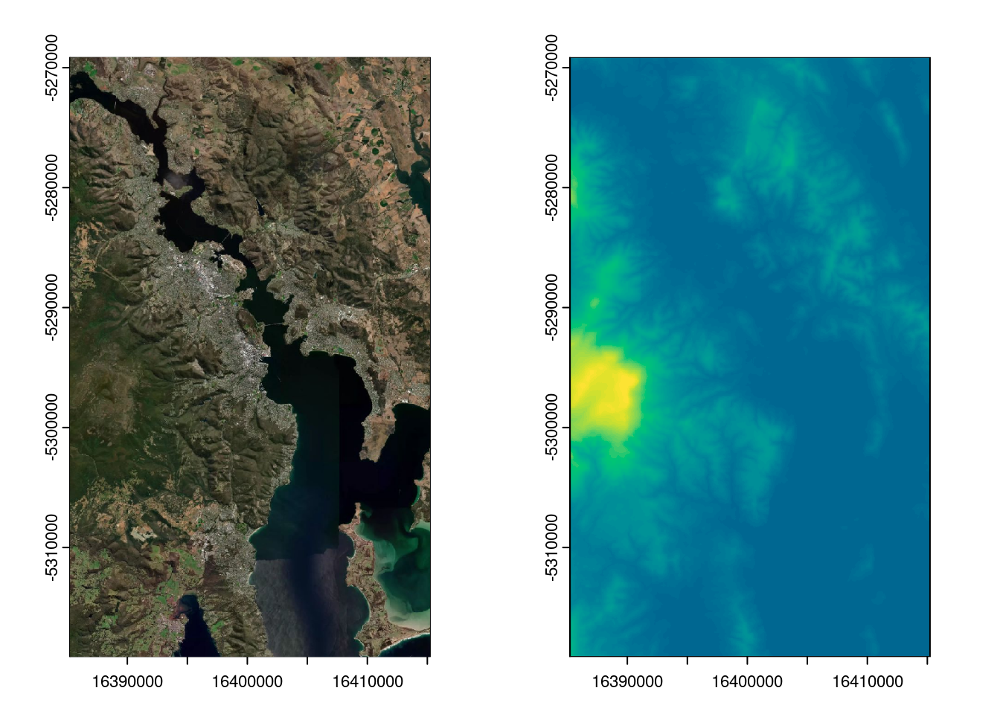

class : SpatRaster
dimensions : 960, 576, 1 (nrow, ncol, nlyr)
resolution : 52.08333, 52.08333 (x, y)
extent : 16385222, 16415222, -5319119, -5269119 (xmin, xmax, ymin, ymax)
coord. ref. : WGS 84 / Pseudo-Mercator (EPSG:3857)
source(s) : memory
name : lyr.1
min value : -1.9
max value : 1264.9
op <-par(mfcol =c(1, 2))plot(el, legend = F); plot(im, add =TRUE); plot(el, legend = F, col =hcl.colors(64)[tail(seq_len(64), 45)])

par(op)
These raster objects are in terra ‘SpatRaster’ format (older ceramic used raster package).
These use the Mapbox ‘mapbox.satellite’ and ‘mapbox-terrain-rgb’ tile servers.
Get raster tiles from online
If we want the actual tiles, we can use the original get_tiles() function. (In older versions cc_location() and cc_elevation() would invokeget_tiles, but no longer).
And to see what tiles we have we can materialize their footprint in wk::rct() form, this is way more efficient than having to use polygons.
zoomtiles <- ceramic::ceramic_tiles(imtiles$tiles$zoom)## sub out the ones we just triggeredzoomtiles <- dplyr::filter(zoomtiles, fullname %in% imtiles$files)rc <- ceramic::tiles_to_polygon(zoomtiles)plot(rc)plot(ext(im), add =TRUE) ## see the image from above is not the tiles, but the buffer around a point
plot(read_tiles(pt, buffer =c(15000, 25000))) ## but we can read thos tiles exactly
Preparing to download: 24 tiles at zoom = 12 from
https://api.mapbox.com/v4/mapbox.satellite/
plot(rc, add =TRUE, border ="white")
Diverse query inputs
Finally, we can use a point and buffer to get imagery, or we can use a spatial object, currently supported are objects from {geos}, {wk}, {terra}, {sf}, {sp}, {raster}, and {stars}.
(Please note that the result is still in Mercator, the query can be in any projection but we’re not matching that here, only its extent - ceramic version 0.8.0 is merely a stepping stone to some of the things we can do better with GDAL).
Previous versions of cc_location() and cc_elevation() were stuck with only ‘zoom’ and ‘max_tiles’ arguments, these make sense when you restrict exactly to the available tiles but when you just want a given area and a resolution, ‘dimension’ is more appropriate.
By default, the dimension is chosen relative to the graphics device. But, we can also specify exactly what we want. (Use zero for one of the dimensions to let the system figure out an appropriate size for the query you have).
ceramic is my final CRAN package that had direct dependencies on rgdal, rgeos, or maptools - in some ways it was the most challenging for me and had loomed as a problem for some time. But, I’ve progressed my own tool kit well in the time and I learnt a lot with this update.
A future version will probably make the separation (are we tiles, or are we loading raster?) more complete, at any rate there are better ways to organize these things now. There are data sources, data readers and writers, data structures, and algorithms. This work is part of a family of tools that aims to make that orthogonality real and accessible.